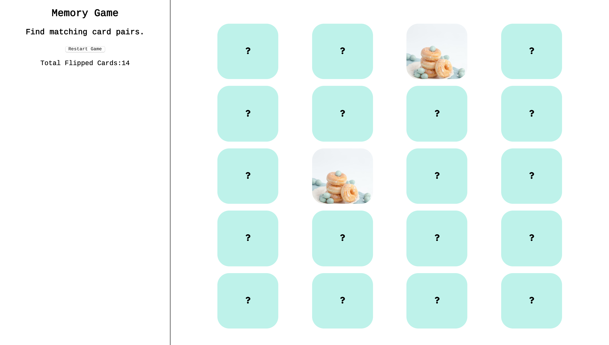
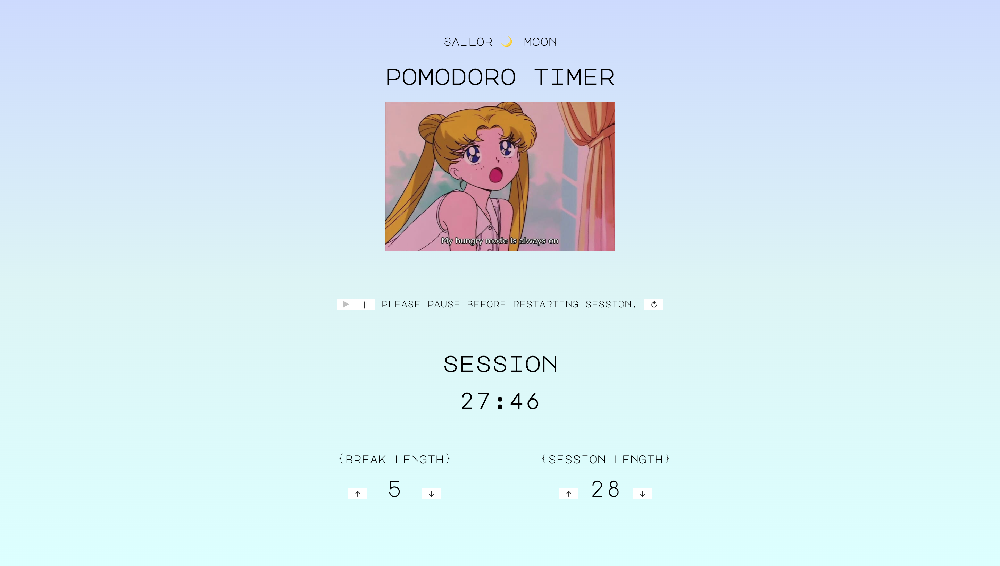

about
🌴 I'm a full-stack software engineer originally from Los Angeles, CA.
🎓 I love integrating my non-tech background (Sociology B.A.
from UCLA) into many aspects of my life, such as in the way I seek out
organizations I strive to be involved with, the methods I go about to
consume news and information, and how I empathize with the people I
meet.
🍕 Pizza is probably my favorite food (I don't really discriminate any
type of food!)
🐮 Cows are my favorite animal.
🌙 All about that Sailor Moon aesthetic and memes (I integrated this into my first project, which was a Sailor
Moon-themed pomodoro timer you can see in my projects below!)
Please click the icon to download a PDF version of my resume:
portfolio

WARBLER - A full-stack Twitter-inspired social media application.
Built with: Python3, Flask, Flask SQLAlchemy, Flask WTF, Jinja

Memory Card Game - A simply designed, single page memory card game. It randomly shuffles cards
on restart of the game and tracks cards flipped.
Built with: HTML, CSS, Javascript

Sailor Moon Pomodoro Timer - Sailor Moon-themed pomodoro timer for your lazy Usagi needs!
Built with: HTML, CSS, Javascript, Jquery
💻 Much more in progress ❗️